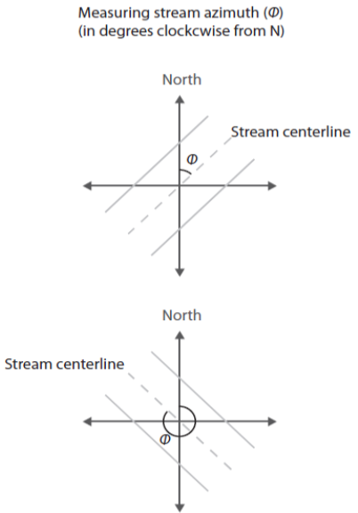

4. Using aqua_light
Phil Savoy
5/17/2021
Source:vignettes/4 Using aqua_light.Rmd
4 Using aqua_light.RmdIntroduction
This article will demonstrate creating estimates of photosynthetically active radiation (PAR) using the aqua_light function. The details and application of this model are detailed in Savoy & Harvey. (2021a), and the modeled estimates from this paper are available in a ScienceBase data release (Savoy & Harvey, 2021b).
There are many ways to derive values for site parameters or model drivers; however, this document focuses on the approaches used in Savoy & Harvey. (2021a) and does not give an exhaustive set of possibilities.
Outline
- Overview: General overview of the function structure.
- Preparing a driver file: Assembling timeseries of model drivers to be fed into the model.
- Preparing a parameter file: Creating a parameter file that describes various site conditions.
- Running aqua_light: Example code of how to run the model to generate estimates in this data release and brief explanation of model outputs.
- Appendix: Governing equations for light reflection and attenuation as a function of depth and clarity.
1. Introduction to the aqua_light function
This tutorial will cover the basic model inputs, model structure, and model outputs. First, let’s take a look at the aqua_light function which has the following structure:
aqua_light(driver_file, Lat, Lon, channel_azimuth, bankfull_width, BH, TH, overhang, overhang_height, x_LAD)
- driver_file The model driver file
- Lat The site latitude
- Lon The site longitude
- channel_azimuth Channel azimuth
- bankfull width Bankfull width (m)
- BH Bankfull height (m)
- TH Tree height (m)
- overhang Maximum canopy overheight (m)
- overhang_height Height of the maximum canopy overhang (m). If overhang_height = NA, then the model defaults to a value of 75% of tree height.
- x_LAD Leaf angle distribution, default = 1
Running aqua_light model requires a parameter file that describes various site characteristics and a driver file that contains inputs into the model. The first argument for the function (driver_file) is a standardized model driver file that contains timeseries of model inputs. The remaining arguments in the function are parameters that describe site characteristics. Section 2 gives more information about creating a model driver file and section 3 details the creation of a site parameter file.
2. Preparing a driver file
The structure of the model driver is as follows:
- “local_time”: Local time in the format YYYY-mm-dd HH:MM:SS based on the site timezone
- “offset”: The UTC offset for local time (hours)
- “jday”: A unique identifier for each day that combines year and day of year information in the format YYYYddd
- “Year” The year
- “DOY”: The day of year (1-365 or 366 for leap years)
- “Hour”: Hour of the day (0-23)
- “SW_inc”: Total incoming downwelling shortwave radiation (W m-2). StreamLightUtils provides tools to get hourly data from NLDAS.
- “LAI”: MODIS leaf area index (m2 m-2). StreamLightUtils provides tools to generate interpolated to daily values using the AppEEARS_proc function.
- “depth”: Water depth (m)
- “width”: Wetted width (m)
- “kd_pred”: The irradiance attenuation coefficient (m -1)
Preparing a driver file may depend on available data at a site or the needs of individual researchers. The StreamLightUtils package provides utilities to generate a standardized driver file that contains “local_time”, “offset”, “jday”, “Year”, “DOY”, “Hour”, “SW_inc”, and LAI. The following sections provide information about the approaches used in Savoy & Harvey. (2021a) to derive “depth”, “width”, and “kd_pred”.
Depth (“depth”)
Depth could be measured or estimated in a variety of ways, and one possibility is to estimate depth as a function of discharge and hydraulic geometry coefficients following Gomez-Velez et al. (2015) (depth = c * Qf), where Q is discharge (m3 s-1) and the terms c and f are empirical coefficients. The hydraulic geometry coefficients of Gomez-Velez et al. (2015) are included in the Appling et al. (2018) for 356 U.S. rivers; however, since Appling et al. (2018) have already done this conversion we have used their values. These depths represent mean depth averaged over the reach length and width for the date (4am to 3:59pm).
Width (“width”)
Similar to depth, we estimated width as a function of discharge and the hydraulic geometry coefficients following Gomez-Velez et al. (2015) (width = a * Qb), where Q is discharge (m3 s-1) and the terms a and b are empirical coefficients. We used mean daily discharge to calculate mean width for the date (4am to 3:59pm).
3. Preparing a parameter file
Channel azimuth (channel_azimuth)
Currently there is no functionality to derive stream azimuth within the StreamLightUtils package. In the meantime, these can be derived manually using aerial photographs, flowlines, or field derived measurements. The functions used to calculate shading (Li et al., 2012) follow the convention where stream azimuth is measured clockwise from North. However, since both banks are parameterized identically in both stream_light and *aqua_light, this distinction is less relevant and an azimuth of 45\(^{\circ}\) and 225\(^\circ\) will yield the same results. We only mention this point in case future development may allow for parameterizing banks separately, or in case someone wanted to modify the code on their own to add in this functionality.
Example of deriving azimuth, note the first azimuth of the first example is 45\(^\circ\) whereas the second example is 315\(^\circ\).

Bankfull width (bankfull_width)
We estimated bankfull channel width from regionalized hydraulic geometry coefficients as a function of discharge (Gomez-Velez et al. 2015). Bankfull widths could also be acquired field measurements or several remotely-sensed or empirically-derived products.
Bank height (BH)
We estimated bank heights based on the maximum predicted water depth at each site, but field surveys or LiDAR data could be alternative sources to derive this parameter.
Tree height (TH)
Tree heights were derived from global estimates of canopy heights at 30m resolution from Potapov et al. (2021). The 90th percentile of tree height within a 60m buffer into the riparian zone was calculated for each site.
Alternatively, users can use the extract_height function from the StreamLightUtils package to extract 1km LiDAR data from Simard et al. (2011) based on latitude and longitude.
Maximum canopy overhang (overhang)
Without detailed information on canopy overhang it was assumed that overhang was 10% of tree height at all sites. In Savoy et al. (2021) a 10% overhang was used to validate the stream_light function; however, this is a rather simple assumption. Savoy et al. (2021) gives some suggestions of potential data sources that could be used to refine these estimates.
4 Running aqua_light
As part of a ScienceBase data release (Savoy & Harvey, 2021b), a prepared R environment (loaded_environment.RData) contains necessary inputs and outputs from aqua_light. This data is used below to demonstrate the use of aqua_light. Before beginning it is necessary to download and load in the prepared R environment (loaded_environment.RData) using the load command. For example if this file was located in the C:/ directory:
load("C:/loaded_environment.RData")To easily run the model across many sites a wrapper function is included below. This will get the relevant parameters and driver files for each site and return the modeled estimates
batch_model <- function(Site_ID, model_parameters, model_drivers){
#Print a message to keep track of progress
message(paste0("Generating modeled estimates for ", Site_ID))
#Get the model driver
driver_file <- model_drivers[[Site_ID]]
#The input_output file contains the model inputs and outputs, let's select just the necessary
#input columns to reduce confusion
model_driver <- driver_file[, c("local_time", "offset", "jday", "Year", "DOY", "Hour", "SW_inc",
"LAI", "kd_pred", "depth", "width")]
#Get model parameters for the site
site_p <- model_parameters[model_parameters[, "Site_ID"] == Site_ID, ]
#Run the model
modeled <- aqua_light(
driver_file = model_driver,
Lat = site_p[, "Lat"],
Lon = site_p[, "Lon"],
channel_azimuth = site_p[, "Azimuth"],
bankfull_width = site_p[, "width_harvey"],
BH = site_p[, "bank_height"],
TH = site_p[, "TH"],
overhang = site_p[, "overhang"],
overhang_height = site_p[, "overhang_height"],
x_LAD = site_p[, "x"]
)
return(modeled)
} #End batch_modelThe next step is to simply apply this function across all sites. Here, the model drivers have been placed into a single list to easily loop over each site driver file.
modeled_estimates <- lapply(
names(inputs_outputs),
FUN = batch_model,
model_parameters = site_parameters,
model_drivers = inputs_outputs
)The modeled output contains the following columns:
“local_time”: Local time in the format YYYY-mm-dd HH:MM:SS based on the site timezone
“offset”: The UTC offset for local time (hours)
“jday”: A unique identifier for each day that combines year and day of year information in the format YYYYddd
“Year” The year
“DOY”: The day of year (1-365 or 366 for leap years)
“Hour”: Hour of the day (0-23)
“SW_inc”: Total incoming downwelling shortwave radiation (W m-2). StreamLightUtils provides tools to get hourly data from NLDAS. Specifically, the data used in this example is from the North American Land Data Assimilation System (NLDAS) (original attribute name DSWRFsfc) . This data was downloaded and processed using the StreamLightUtils package.
“LAI”: MODIS leaf area index (m2 m-2). StreamLightUtils provides tools to generate interpolated to daily values using the AppEEARS_proc function. Specifically, the data used in this example is MODIS 8-day 500m leaf area index (MCD15A2H-006). This data has been interpolated to daily values following the method of Gu et al. (2009) using the StreamLightUtils package, which leverages these routines from the phenofit R package.
“depth”: Water depth (m). Specifically, the data used in this example is mean depth (m), averaged over the reach length and width, for the date (4am to 3:59pm) from Appling et al. (2018).
“width”: Wetted width (m). Specifically, the data used in this example is mean width (m) for the date (4am to 3:59pm) calculated from the mean discharge and the equation to estimate width as a function of discharge (width = a * Qb) of Gomez-Velez et al. (2015).
“kd_pred”: The predicted irradiance attenuation coefficient (Kd, m-1) for turbid water. Here, we predicted this based on the current turbidity using a log-log linear regression between Kd and turbidity that was derived from in situ measurements.
“PAR_inc”: Incoming, above the canopy, PAR (\(\mu\)mol m-2 s-1)
“veg_shade”: The proportion of the channel crossection that is shaded by riparian vegetation
“bank_shade”: The proportion of the channel crossection that is shaded by stream banks
“PAR_surface”: Estimated PAR at the stream surface (\(\mu\)mol m-2 s-1)
“PAR_subsurface”: Estimated PAR below the stream surface (\(\mu\)mol m-2 s-1)
“PAR_water”: Estimated PAR at the benthic surface assuming optically clear water (\(\mu\)mol m-2 s-1)
“kd_water”: Irradiance attenuation coefficient for optically clear water
“PAR_turb”: Estimated PAR at the benthic surface for turbid water (\(\mu\)mol m-2 s-1)
-
“kd_turb”: The irradiance attenuation coefficient for turbid water. This value is predicted based on the current turbidity using a log-log linear regression between Kd and turbidity that was derived from in situ measurements.
*Note, modeled predictions of PAR will have NA values when the sun is below the horizon.
5. Appendix
The aqua_light adds several proceses to the existing stream_light function including water surface reflection and attenuation as a function of depth and clarity. Therefore, only these new processes are documented below.
5.1 Water surface reflection
The proportion of incident light reflected by the surface of the water (\(R_l\)) was calculated following Kirk et al. (2011):
\[ \begin{align*}R_l = \frac{1}{2} * \frac{sin^2(\theta_a - \theta_w)}{sin^2(\theta_a + \theta_w)} + \frac{1}{2} *\frac{tan^2(\theta_a - \theta_w)}{tan^2(\theta_a + \theta_w)}\\\end{align*} \]
where \(\theta_a\) is the solar zenith angle and \(\theta_w\) is the angle of refraction within the water. \(\theta_w\) was calculated following Snell’s law: \[ \frac{sin \theta_a}{sin \theta_w}= \frac{n_w}{n_a} \] where \(n_w\) is the refractive index for water and \(n_a\) is the refractive index of water. Air and water have different refractive properties but a value of 1.33 for the ratio of the refractive indices of air to water is a good approximation for freshwater and the wavelengths of light within photosynthetically active radiation (PAR) (Kirk et al, 2011): \[ \frac{n_w}{n_a} = 1.33 \]
5.2 Water column light extinction
Within the water column light attenuates nonlinearly with depth which can be described using a Beer-Lambert equation: \[ I_z = I_{sub}e^{-{K_d}*z} \] where light at a given depth (\(I_z\)) can be calculated using light just below the water surface (\(I_{sub}\)), depth (\(z\)), and the extinction coefficient (\(K_d\)).